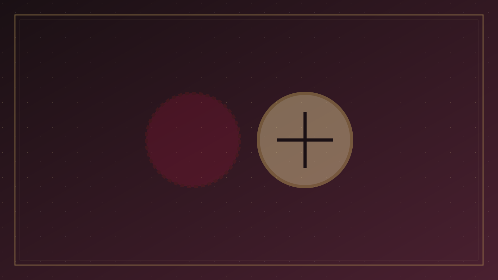

分題 01 / 07
問題意識
一、問題意識：所信的基督是否真基督
「異端」在今日華語裡，往往變成一句情緒詞：誰跟我不一樣，誰就是異端。這樣用，既不忠於聖經，也不忠於教會歷史。天主教、東正教與更正教各支，常在福音核心上仍認那位成了肉身、死而復活的基督；它們的分歧，應當在「基督教各宗派」裡按經文與歷史來談。本篇所處理的，是另一條線：偏離使徒對基督、救恩與聖經的見證。新約用很重的話，不是因為使徒喜歡獵巫，而是因為所信的對象一旦被掉包，教會就不再是教會。
哥林多後書十一章把危機寫得很具體。保羅擔心的，不是哥林多人少了熱情，而是他們的心「偏於邪」，失去「向基督所存純一清潔的心」，「就像蛇用詭詐誘惑了夏娃一樣」（林後 11:3）。誘惑的形式，不是公開否認宗教，而是另傳一個耶穌、另受一個靈、另得一個福音（林後 11:4）。名稱還在，對象已經換了。這才是新約對假教導如此嚴厲的原因。
「假如有人來另傳一個耶穌，不是我們所傳過的；或者你們另受一個靈，不是你們所受過的；或者另得一個福音，不是你們所得過的；你們容讓他也就罷了。」
— 哥林多後書 11:4
「你們容讓他也就罷了」帶着諷刺：哥林多人的寬容，用錯了地方。他們能忍受另一個耶穌，卻對使徒的權柄過敏。今日的危險往往相似：為了和睦，把另一個福音當成不同風格；或者反過來，把禮儀、音樂、千禧年時間表、方言有無，一律打成異端。兩種錯誤都沒有讓經文作主。
因此，方法必須先定義聖經自己的詞語，而不是先開一張教派黑名單。舊約說假先知；耶穌說外面披着羊皮的人；保羅說假師傅、假使徒、另一個福音；約翰說敵基督——那不認耶穌基督是成了肉身來的靈。希臘文 hairesis（αἵρεσις）在新約裡並不處處等於後世教義手冊上的「heresy」；它本指選擇、學派、黨派，後來才在教會用語中凝固為「偏離使徒信仰的教導」。我們必須讓詞語回到文本，再談今日常見的偏差。試驗諸靈、分辨「神說」的限度，見「辨別神的聲音」；經歷若要服在聖言之下，見「靈修學」。本篇不重寫那兩篇，只問：這教導所指向的，是不是使徒所傳的那位基督。
不是甚麼
不是「跟我不一樣的宗派」，不是禮儀或靈恩程度上的差異，也不是把所有錯謬一次釘死。
是甚麼
是更換基督、更換福音、或以新經典／新教主凌駕使徒見證，使人失去向基督的純一。
方法
以經解經、有歷史意識、不獵巫、不聳動。先聽聖經自己的詞語，再用同一把尺量當代教導。